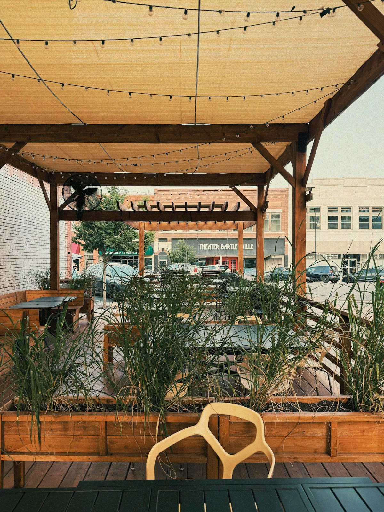
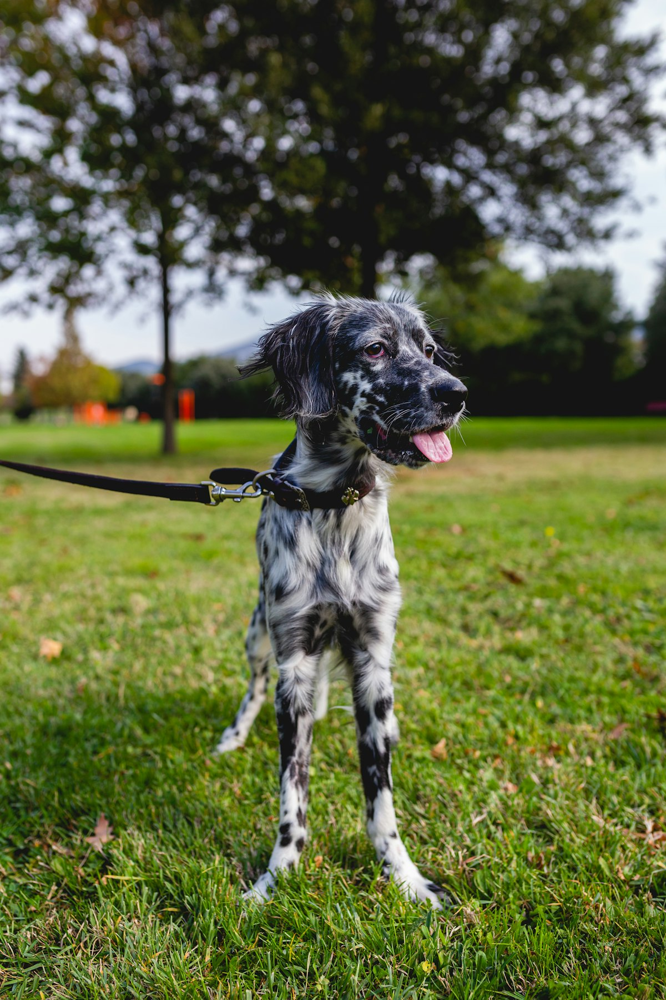
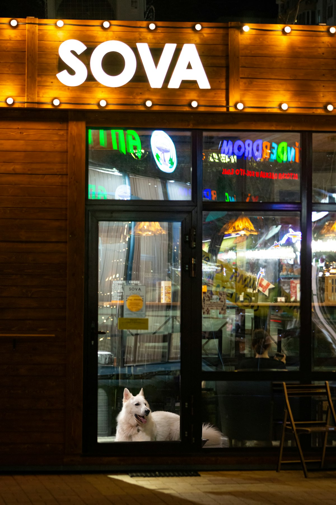

Last searches
Last searches
Bring Your Dog helps locals and visitors find places where dogs are welcome, from sunny cafe tables to covered beer gardens, off-leash parks and independent shops.

Where to take your dog around Brunswick Street and Edinburgh Gardens.

Where to take your dog around Smith Street, Gipps Street and Yarra-side paths.
Search dog-friendly beer gardens, street seating, cafes and parks around Church Street, Swan Street and Barkly Gardens.
Find dog-friendly cafes, rooftops, beer gardens and river-side green space near Clarendon Street and Yarra's Edge.

Where to take your dog around Chapel Street, Fawkner Park and Greville Street.

Discover dog-friendly bars, beer gardens, coffee spots and park walks around Sydney Road, Lygon Street and Princes Park.

Where to take your dog around High Street, Merri Creek and Penders Park.

Use the Rainy Days filter to find covered, undercover, indoor or sheltered dog-friendly venues when the weather turns.
Want your dog-friendly business to be featured here? Send kirathesmol a DM!